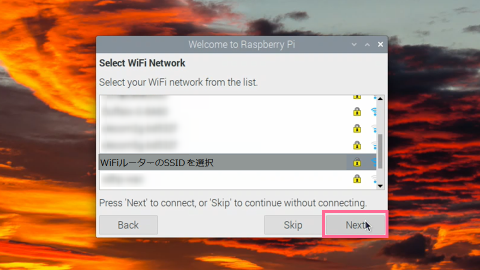

書き込みが終わったmicroSDカードをラズパイに挿入します。
microSDの表裏は挿さる方向にしか挿さりません。
microSDの表面の文字が見える方向です。
必要な周辺機器を接続して起動します。
青い画面や黒い画面などが出てきますが、ちょっと待つとすぐにデスクトップ画面が表示されます。
このようなウィンドウが出ていると思いますので、それぞれ指示に従って設定します。
［Next］をクリックします。
[国・言語・タイムゾーン設定]
Japanを選択してください。残りの２つはJapanese, Tokyo と自動的に選ばれると思います。確認出来たら Next ボタンを押します。
[パスワード設定]
パスワードは後でいつでも変更できますので、ここは空欄のまま ボタンでOKです。
デフォルトのパスワードは「 raspberry 」です。
変更したい人は別のパスワード(8文字以上)を入力して下さい。
下段のテキストボックスは確認用です。
ちなみに、ラズパイのパスワード入力は起動時には不要で、
無線でアクセスしたり、ソフトをインストールしたりするときに使用します。
[画面設定]
もしディスプレイに映っている画面が完全にフルスクリーンでなく、
周辺が黒枠になっているなら、チェックボックスにチェックを入れます。
この設定も後で変更可能です（オーバースキャン設定）
Next ボタンを押します。
周辺の黒枠はすぐには画面に反映されません。
最後に再起動したときに反映されます。
[WiFi設定]
しばらく待っていると、WiFiネットワークのリストが出てきます。
自分のWiFiルーターのSSIDを選択してNext ボタンを押します

Password 入力画面になるので、
WiFiルーターのKEYをキーボードから打ち込んで、
Next ボタンを押します。
接続が完了すると画面右上の表示が次のように変化します。
[ソフトウェア更新]
OSやアプリをチェックして最新に更新することができます。
Skip しても後でコマンドで実行することは可能ですが、
Next ボタンを押して待ちましょう。
このようなupdate画面が出てきて、結構時間がかかる場合があります。
このように System is up to date というウィンドウが出てくれば
終了です。OKボタンを押します。
画面設定などが反映されていない場合があります。
Restart ボタンを押して再起動することで全て反映されます！
再起動はまた黒い画面になりますが、
しばらくするとデスクトップ画面になります。